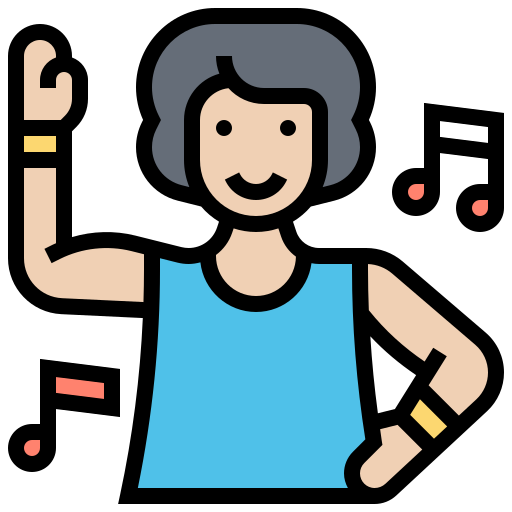
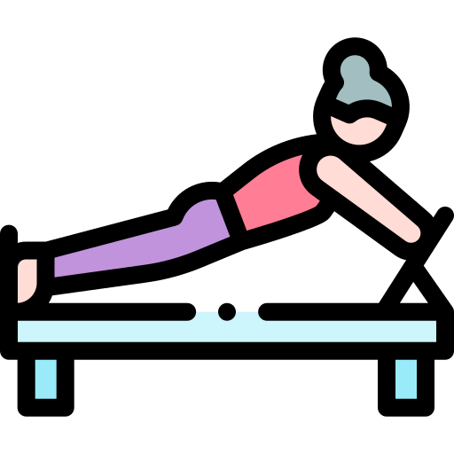
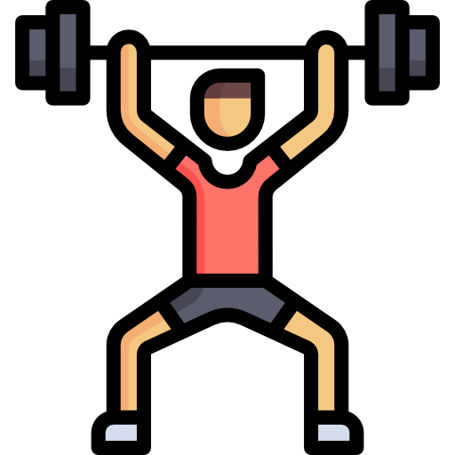
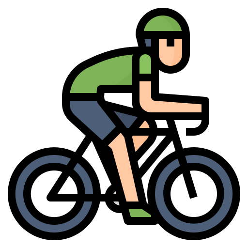
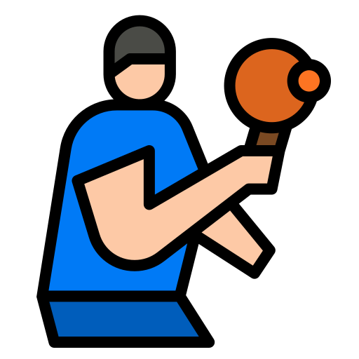

왜 운동을 해야 할까요?
현대인의 생활습관은 주로 앉아서 생활하는 시간이 많아, 운동
부족으로 인한 건강 문제가 늘어나고 있습니다.
규칙적인 운동은 체력과 면역력을 증진시켜 만성 질환을 예방하는 데
중요한 역할을 합니다.
또한, 스트레스 해소와 정신 건강에도 긍정적인 영향을 미치며, 더
건강한 삶을 살아가는 데 필수적인 요소입니다.
명지 피트니스 프로그램이란?
명지대 학생들의 건강 증진을 위한 체계적인 운동 프로그램입니다.
다양한 운동 기구와 전문 강사의 지도로, 학생들이 자신의 체력 수준에
맞는 맞춤형 운동을 할 수 있도록 지원합니다.
본 프로그램은 체력 향상뿐만 아니라, 스트레스 해소와 학업 성취도
향상을 목표로 설계되었습니다.
또한, 팀 운동과 개별
트레이닝을 모두 제공하여, 개인의 운동 목표에 따라 유연하게 참여할
수 있습니다.
명지 피트니스 프로그램의 특징은 무엇인가요?
- 전문 강사 지도: 자격증을 보유한 전문 트레이너가 개별 지도 및 피드백을 제공합니다.
- 맞춤형 운동 플랜: 학생들의 체력과 목표에 따라 1:1 맞춤형 운동 계획을 설계합니다.
- 다양한 프로그램: 요가, 필라테스, 클라이밍, 크로스핏 등 다양한 운동 선택이 가능합니다.
- 시설 완비: 최신 운동 기구와 개인 사물함 등 쾌적한 운동 환경을 갖춘 전용 피트니스 센터가 제공됩니다.
명지 피트니스 프로그램을 통해 건강한 몸과 마음을 가꾸고, 활기찬 학교 생활을 만들어 보세요!
프로그램 소개
요가 프로그램

요가는 몸과 마음의 균형을 찾아주는
운동입니다.
유연성을 향상시키고 스트레스를 완화하는 데 도움을 줍니다.
집중력과 호흡 조절 능력을 기를 수 있습니다.
운동 강도: 낮음 (시간당 약 200-300kcal 소모)
요가란? 기초 동작과 운동방법을 알아보세요에어로빅 프로그램

에어로빅은 심폐 지구력을 강화하는 유산소
운동입니다.
전신을 움직여 체지방을 감소시키고 체력을 향상시킵니다.
즐겁고 신나는 음악에 맞춰 스트레스를 해소할 수 있습니다.
운동 강도: 중간 (시간당 약 400-500kcal 소모)
에어로빅이란? 기초 동작과 운동방법을 알아보세요필라테스 프로그램

필라테스는 코어 근육을 강화하고, 신체의 균형과
유연성을 높이는 운동입니다.
근력과 유연성을 동시에 발달시켜 몸의 긴장을 풀어주고, 자세
교정에 큰 효과를 줍니다.
특히, 반복적인 스트레칭 동작을 통해 체형 개선과 체지방 감소에도
도움이 됩니다.
운동 강도: 중간 (시간당 약 300-400kcal 소모)
필라테스란? 기초 동작과 운동방법을 알아보세요수영 프로그램

수영은 전신을 사용하는 고효율 운동입니다.
근력을 강화하고 관절에 무리가 가지 않는 유산소 운동으로
추천됩니다.
물 속에서 체지방을 태우며 몸매를 다듬을 수 있습니다.
운동 강도: 높음 (시간당 약 500-700kcal 소모)
수영이란? 기초 동작과 운동방법을 알아보세요크로스핏 프로그램

크로스핏은 고강도의 근력 및 유산소 운동을
결합한 프로그램입니다.
체력을 극대화하고 근육을 빠르게 성장시킬 수 있습니다.
전신의 균형과 지구력을 강화하는 데 도움을 줍니다.
운동 강도: 매우 높음 (시간당 약 600-800kcal 소모)
크로스핏이란? 기초 동작과 운동방법을 알아보세요사이클링 프로그램

사이클링은 심폐 지구력을 높이고 하체 근육을
강화하는 유산소 운동입니다.
고강도의 페달링을 통해 칼로리를 소모하고 체지방을
감소시킵니다.
반복적인 움직임으로 하체 근력을 빠르게 단련할 수 있어 효과적인
운동입니다.
운동 강도: 중간 (시간당 약 400-600kcal 소모)
사이클링이란? 기초 동작과 운동방법을 알아보세요탁구 프로그램

탁구는 민첩성과 손과 눈의 협응능력을 향상시키는
운동입니다.
빠른 반응 속도를 기르며 체력을 단련할 수 있습니다.
가볍게 즐기면서도 땀을 흘리며 운동 효과를 느낄 수 있습니다.
운동 강도: 낮음 (시간당 약 250-350kcal 소모)
탁구란? 기초 동작과 운동방법을 알아보세요배드민턴 프로그램

배드민턴은 전신을 사용해 체력과 지구력을 기르는
운동입니다.
파워와 스피드를 동시에 단련할 수 있습니다.
짧은 시간에도 고강도의 운동효과를 기대할 수 있습니다.
운동 강도: 중간 (시간당 약 300-500kcal 소모)
배드민턴이란? 기초 동작과 운동방법을 알아보세요프로그램을 선택해서 시간표를 확인하세요!
명지 피트니스 시간표
| 시간 | 월요일 | 화요일 | 수요일 | 목요일 | 금요일 | 토요일 | 일요일 |
|---|---|---|---|---|---|---|---|
| 08:00 - 09:00 | 요가 | 에어로빅 | 수영 | 수영 | 요가 | 요가 | 수영 |
| 09:00 - 10:00 | 수영 | 요가 | 사이클링 | 사이클링 | |||
| 10:00 - 11:00 | 사이클링 | 배드민턴 | 요가 | 에어로빅 | 배드민턴 | 탁구 | 요가 |
| 11:00 - 12:00 | 에어로빅 | 사이클링 | 필라테스 | 사이클링 | |||
| 14:00 - 15:00 | 탁구 | 필라테스 | 탁구 | 배드민턴 | 수영 | 수영 | 에어로빅 |
| 15:00 - 16:00 | 수영 | ||||||
| 16:00 - 17:00 | 크로스핏 | 배드민턴 | 탁구 | 크로스핏 | 필라테스 | 필라테스 | |
| 17:00 - 18:00 | 탁구 | ||||||
| 18:00 - 19:00 | 필라테스 | 사이클링 | 필라테스 | 크로스핏 | 에어로빅 | 크로스핏 | 탁구 |
| 19:00 - 20:00 | 요가 | 크로스핏 | 배드민턴 | 탁구 | 수영 | 크로스핏 | |
| ※ 시간표는 사정에 따라 변동될 수 있습니다. 변경된 일정은 공지사항 페이지에서 확인할 수 있습니다. | |||||||